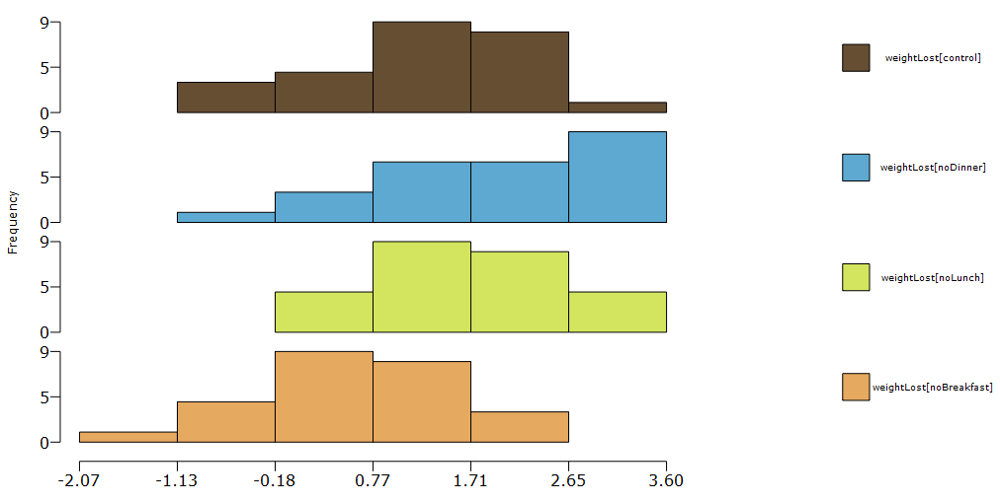
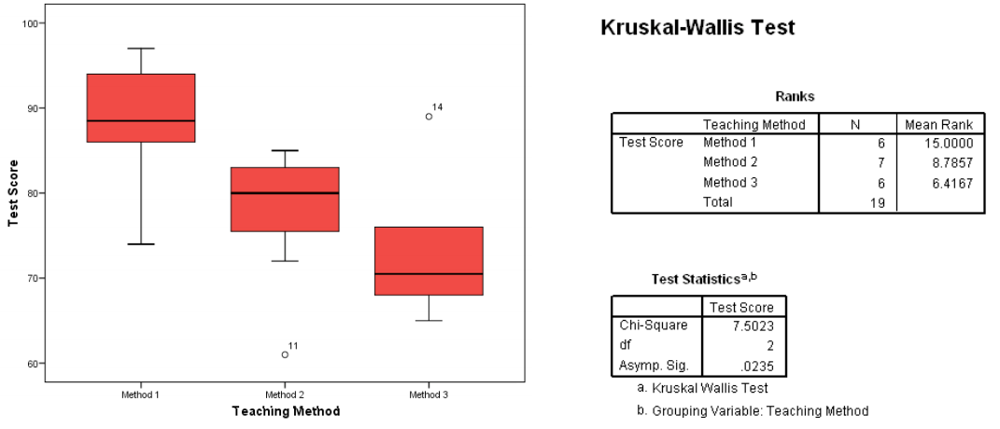

Kruskal-Wallis test is used when 3 or more conditions are compared and the independent variable is a between-groups factor (different participants are used for different conditions). It is an alternative to the one-way ANOVA. It can be used used when distributions are not normal. However, it requires homogeneity of variances to be met (i.e., the distributions must have equal variances).
Conditions:
- Between-subjects experimental design
- The dependent variable is in ordinal or continuous scale
- The dependent variable is not required to normally-distributed in each condition but homogeneity of variances should be met
- Same variability ie you have to determine whether the distribution in each group have same shape which also means same varialability.
Examples:
Example 1: Does skipping a meal lead to weight loss? If so, does it vary for different meals? In this experiment, we compare the weight lost by participants under four different conditions: skip breakfast, skip lunch, skip dinner, and control. We measured the amount of weight lost (positive value means that weight was lost) and the absolute BMI after 3 months. The experiment follows a between-group design. Following the experiment, we also get the satisfaction rating from the participant. The amount of exercise of the participant is also considered as an independent variable.

Example 2: Three teaching methods were tested on a group of 19 students with homogeneous backgrounds in
statistics and comparable aptitudes. Each student was randomly assigned to a method and at the end of a
6-week program was given a standardized exam. Because of classroom space and group size, the
students were not equally allocated to each method. The results are shown in the table below. Test for a
difference in distributions (medians) of the test scores for the different teaching methods using the
Kruskal-Wallis test.
